Error Handling
Why error handling?
You have already met several errors in this course: FileNotFoundError when opening a missing file, TypeError when calling a function with too many arguments, NameError when using an undefined variable. Time to understand what they are and why you can’t just ignore them.
age = int(input("Enter your age: "))
print("Next year you will be", age + 1)If the user types a number, it works perfectly:
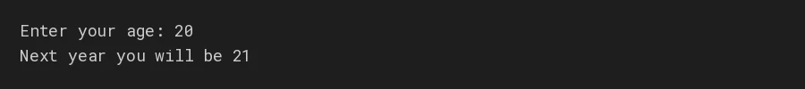
But real users don’t always type what you expect. What if the user types words instead?
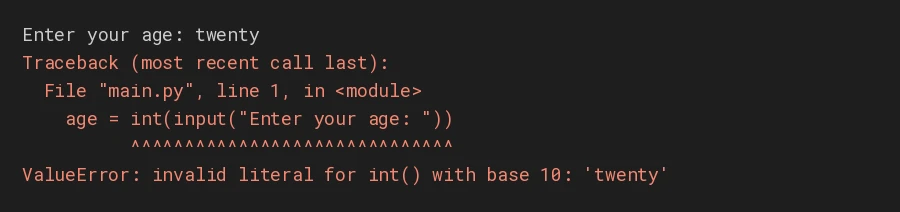
twenty crashes the program with a ValueError.Instead of allowing the program to simply crash, we can handle the problem and respond appropriately. That leads us to error handling.
What is an error / exception?
Some problems are found before the program runs; others happen while it is running. Two kinds matter first.
1 · Syntax error: the code is written wrongly
Python finds it before running, so nothing runs at all. A missing closing bracket:
print("Hello"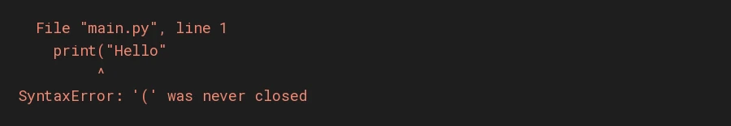
SyntaxError: Python refuses to run anything.2 · Runtime error: correct code, impossible situation
The code reads fine, but the situation makes it impossible, like dividing by zero:
print(10 / 0)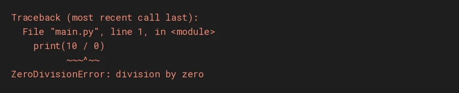
When a runtime problem occurs, Python raises an exception. If nobody handles it, the program stops and Python prints an error message.
| Syntax error | Runtime error (exception) | |
|---|---|---|
| When? | before the program starts | while the program is running |
| Cause | code written the wrong way | a situation the code can’t handle |
| Example | missing bracket or colon | dividing by zero, missing file |
| Can we handle it? | no: fix the code | yes: that’s what this note is about |
Runtime errors and their impact
A small program that stores student marks:
print("Program started")
marks = [85, 90, 78]
print(marks[5])
print("Program finished")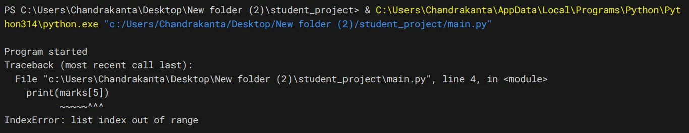
The list has only 3 items, so position 5 doesn’t exist. Python raises an IndexError and the program stops right there. “Program finished” never prints.
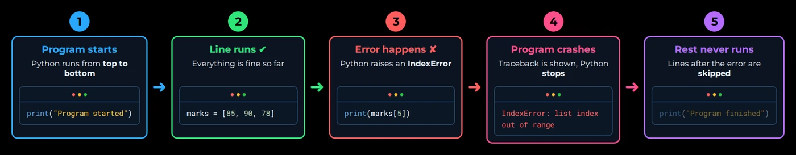
Reading the error message (the traceback)
The message is called a traceback. It looks scary but it tells you exactly what went wrong:
WHERE the error happened: file and line number
WHAT type of exception it is
WHY it happened
~~~^^^ markers (Python 3.11+) point at the exact part of the line that failed.Why this matters
When an exception is not handled:
- every line after the error is skipped
- unfinished work may not be completed
- data that wasn’t saved yet may be lost
- the user sees a confusing error message
- in a real application, an unexpected crash can interrupt an important task
Expect the unexpected
You can’t control everything around your program. Real programs face situations you didn’t plan for:
Bad input
The user types abc where a number is expected.
Missing file
A file you want to read was deleted or moved.
Missing key
A dictionary doesn’t have the key you’re looking for.
Zero
A value becomes 0 and you divide by it.
None of these are mistakes in your code; they are situations. A good program expects them and has a plan for each.
Option 1: check first
value = input("Enter marks: ")
if value.isdigit():
marks = int(value)
print("Marks entered:", marks)
else:
print("Please enter a valid number.")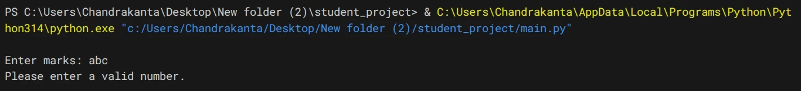
abc, the check fails and the else message prints instead of a crash.This works here, but checking in advance has limits:
.isdigit()says"-5"and"85.5"are not digits, so you’d need more and more checks.- Some problems can’t be checked in advance: a file can disappear between your check and the moment you open it.
- A program has many risky lines; checking each one makes code long and messy.
So Python offers a better tool: try the risky code, and if it fails, handle it.
Graceful error handling
Graceful error handling means that when something goes wrong, the program gives a clear, useful response instead of crashing with a traceback.
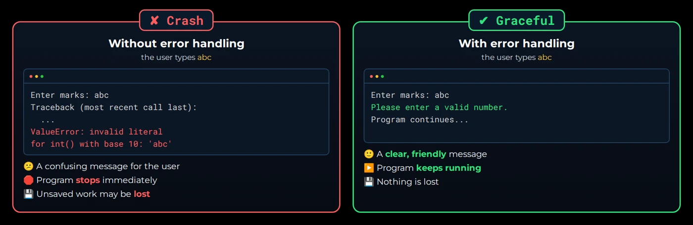
For example, instead of allowing invalid input to crash the program:
try:
marks = int(input("Enter marks: "))
print("Marks entered:", marks)
except ValueError:
print("Please enter a valid number.")
print("Program continues...")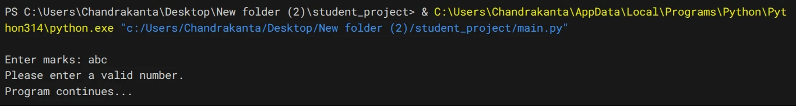
abc: a friendly message, and the program carries on.No traceback, no crash: just a friendly message, and the program keeps going. Let’s learn exactly how this works.
try / except
In the previous section, checking input before an operation prevented some problems, but you cannot always predict every problem in advance. So instead of checking everything first, Python lets you try an operation and handle the exception if it occurs.
What do try and except do?
try
“Try running this code; it might fail.” Put the risky lines inside.
except
“If an exception happens in the try block, handle it here instead of crashing.”
try:
# code that might cause an error
except:
# code that runs if an error happens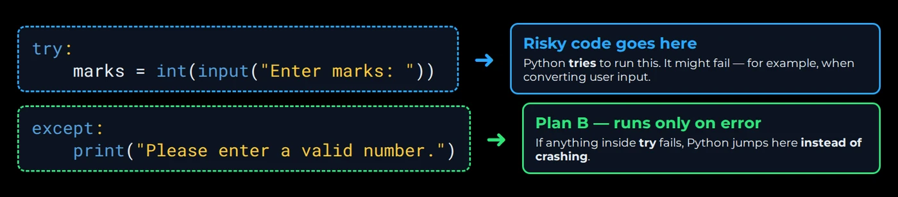
try holds the risky code; except is plan B.tryandexceptboth end with a colon:- the code inside each is indented, like an
iforforbody exceptmust come directly after thetryblock
For example, we already saw that converting "abc" to an integer causes a ValueError. Instead of letting the program crash, we can handle that exception:
try:
marks = int(input("Enter marks: "))
print("Marks entered:", marks)
except:
print("Please enter a valid number.")85: the try block finishes.abc: the except block runs.With 85, the conversion succeeds and except is skipped. With abc, int() raises a ValueError, Python stops the try block and runs except. You get a friendly response instead of an unhandled traceback.
try:
amount = int(input("Enter amount to withdraw: "))
print("Please collect your cash:", amount)
except:
print("Please enter the amount in numbers only.")Enter amount to withdraw: two thousand
Please enter the amount in numbers only.How the flow works
Python runs the try block line by line. The moment an exception occurs:
- 1Python stops the try block
- 2The remaining try lines are skipped
- 3Python looks for a matching except
- 4That except block runs
- 5The program continues after the try/except
print("Start")
try:
print("Step 1")
result = 10 / 0
print("Step 2")
except:
print("Something went wrong")
print("End")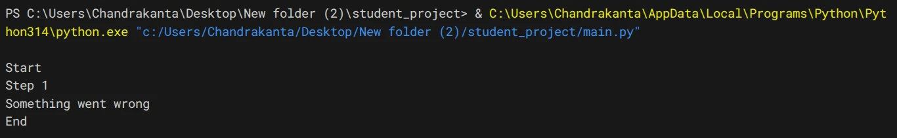
try at the error line.print("Start")
try:
print("Step 1")
result = 10 / 2
print("Step 2")
except:
print("Something went wrong")
print("End")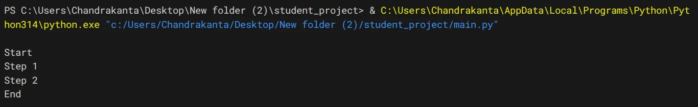
except is skipped.On the left, “Step 2” was never printed: Python left the try block at the line with the error. On the right, the same program without an error: this time the whole try block ran, and except was skipped completely.
try; the rest of the try block never runs.Handling specific exceptions
A bare except: catches every kind of error. That sounds handy, but it’s dangerous: it also hides mistakes in your own code. Watch what a small typo does:
try:
marks = int(input("Enter marks: "))
print("Marks entered:", mark) # typo: mark instead of marks
except:
print("Please enter a valid number.")85, yet the program says “Please enter a valid number.”The user typed a perfectly valid number, but the program blames them. The real problem was our typo, a NameError, and the bare except hid it.
try:
# risky code
except ExceptionName:
# runs only for THIS type of exceptionNow the same program with the typo:
try:
marks = int(input("Enter marks: "))
print("Marks entered:", mark) # typo: mark instead of marks
except ValueError:
print("Please enter a valid number.")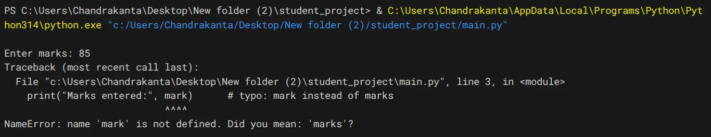
except ValueError, the real bug (a NameError) is no longer hidden.Now Python shows the real problem so you can fix it. Only a ValueError (the exception you expected) is handled. After fixing the typo:
try:
marks = int(input("Enter marks: "))
print("Marks entered:", marks)
except ValueError:
print("Please enter a valid number.")85.abc.except: It swallows bugs (typos, wrong types) and makes them look like user errors. Always name the exception you expect.Seeing the details with as
as e stores the exception in a variable (e is just a name, like file in with open() as file):
try:
marks = int(input("Enter marks: "))
except ValueError as e:
print("Error:", e)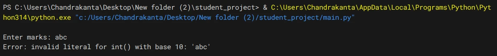
e holds Python’s own explanation of what went wrong.try:
seats = int(input("Enter number of seats: "))
except ValueError as e:
print("Booking failed:", e)Enter number of seats: two
Booking failed: invalid literal for int() with base 10: 'two'e for engineers and show users a friendlier sentence.Handling multiple exception types
One piece of code can fail in more than one way:
total = int(input("Enter total marks: "))
students = int(input("Enter number of students: "))
print("Average:", total / students)Write one except block per exception, one after another:
try:
total = int(input("Enter total marks: "))
students = int(input("Enter number of students: "))
print("Average:", total / students)
except ValueError:
print("Please enter numbers only.")
except ZeroDivisionError:
print("Number of students cannot be zero.")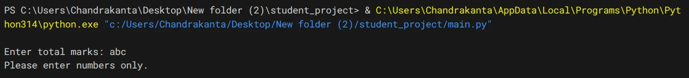
abc: the ValueError block runs.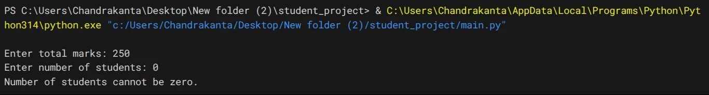
250 and 0: the ZeroDivisionError block runs.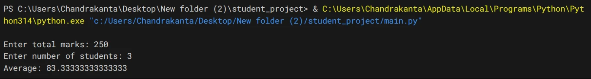
250 and 3: no error, the average prints.Each problem gets its own message. Python checks the except blocks top to bottom and runs only the first one that matches.
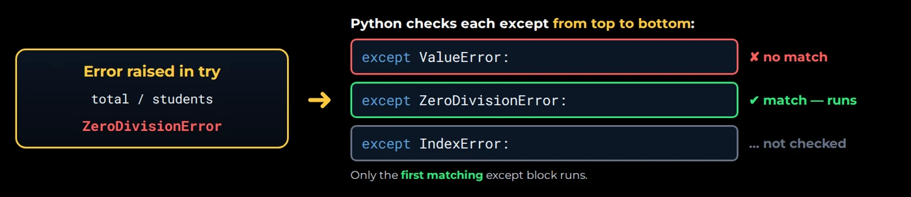
except matches, the blocks below it aren’t even checked.try:
bill = int(input("Enter total bill: "))
friends = int(input("Enter number of friends: "))
print("Each person pays:", bill / friends)
except ValueError:
print("Please enter numbers only.")
except ZeroDivisionError:
print("Number of friends cannot be zero.")Enter total bill: 1200
Enter number of friends: 4
Each person pays: 300.0Same response for several exceptions
Group them in brackets (a tuple):
try:
total = int(input("Enter total marks: "))
students = int(input("Enter number of students: "))
print("Average:", total / students)
except (ValueError, ZeroDivisionError):
print("Invalid input. Please try again.")250 and 0: the grouped handler catches it.try:
distance = float(input("Enter distance travelled (km): "))
fuel = float(input("Enter fuel used (litres): "))
print("Mileage:", distance / fuel, "km per litre")
except (ValueError, ZeroDivisionError):
print("Invalid input. Please try again.")Enter distance travelled (km): 450
Enter fuel used (litres): 30
Mileage: 15.0 km per litreCommon built-in exceptions
Python has many built-in exceptions, but a few appear again and again. For each one, let’s see what causes it and how to handle it.
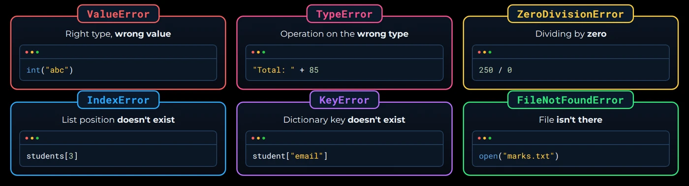
ValueError
Sometimes Python receives a value of the correct general type, but the content of that value is not acceptable for the operation. input() gives you a string, and int() can convert a string that contains a valid whole number, but this cannot be converted:
age = int("twenty")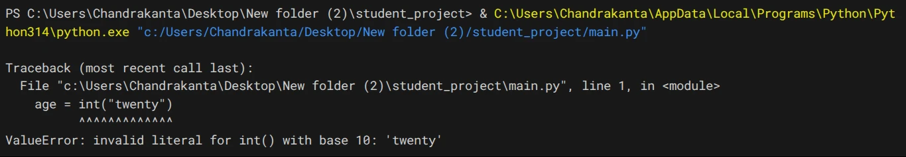
ValueError.Handling it:
try:
age = int(input("Enter your age: "))
print("Next year you will be", age + 1)
except ValueError:
print("Age must be a whole number, like 21.")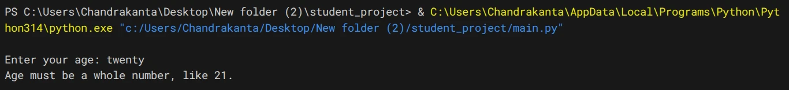
twenty: a helpful message instead of a crash.Common causes: int() or float() on text like "abc" or "12a"; converting user input that can’t be converted. A shop asking for a quantity behaves the same way:
try:
quantity = int(input("Enter quantity: "))
print("Total price:", quantity * 40)
except ValueError:
print("Quantity must be a whole number, like 3.")Enter quantity: 2.5
Quantity must be a whole number, like 3.TypeError
A value is used with an operation that doesn’t support its type:
marks = 85
print("Total: " + marks)We are trying to use + between a string and an integer, so Python raises a TypeError:
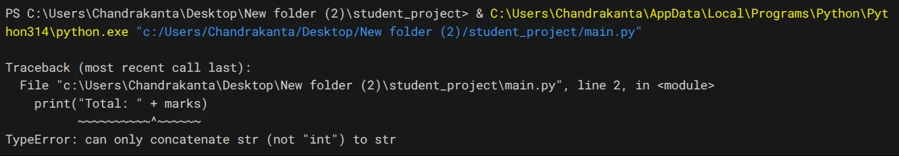
+.Handling it:
marks = 85
try:
print("Total: " + marks)
except TypeError:
print("Cannot join text and a number directly.")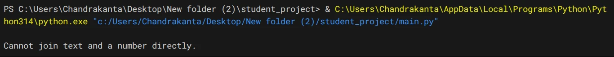
except TypeError message.str(marks).marks = 85
print("Total: " + str(marks))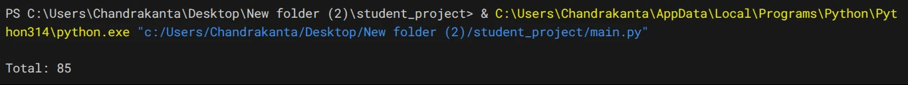
str() turns the number into text first.The same fix works anywhere you join text and numbers:
items_in_cart = 4
print("Items in your cart: " + str(items_in_cart))Items in your cart: 4ZeroDivisionError
Python can’t divide by zero. This happens when averaging an empty list:
marks = []
average = sum(marks) / len(marks)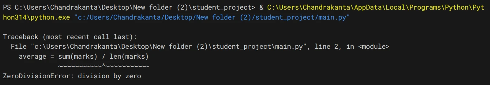
Handling it (and the same idea for a product with no reviews yet):
marks = []
try:
average = sum(marks) / len(marks)
print("Average:", average)
except ZeroDivisionError:
print("No marks available yet.")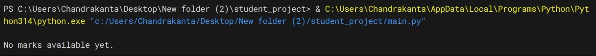
ratings = [] # a brand-new product
try:
average_rating = sum(ratings) / len(ratings)
print("Average rating:", average_rating)
except ZeroDivisionError:
print("No reviews yet for this product.")No reviews yet for this product.IndexError
Accessing a list position that doesn’t exist. A list of 3 students has positions 0, 1, 2, not 3.
students = ["Rahul", "Priya", "Amit"]
print(students[3])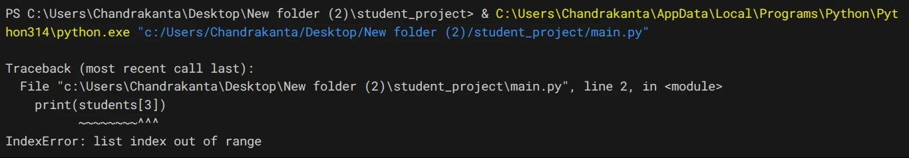
Handling it:
students = ["Rahul", "Priya", "Amit"]
try:
position = int(input("Enter position: "))
print("Student:", students[position])
except IndexError:
print("There is no student at that position.")1.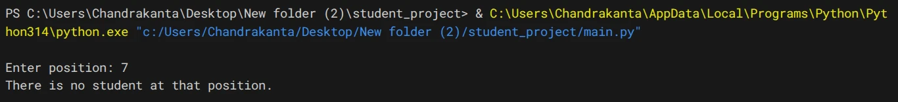
7.A music app playing a chosen song number from a playlist works the same way:
playlist = ["Song A", "Song B", "Song C"]
try:
song_number = int(input("Enter song number: "))
print("Now playing:", playlist[song_number])
except IndexError:
print("There is no song at that number.")Enter song number: 5
There is no song at that number.playlist[song_number - 1]. And negative numbers like -1 don’t raise IndexError at all: they count from the end.KeyError
Looking up a dictionary key that doesn’t exist:
student = {"name": "Rahul", "age": 21}
print(student["email"])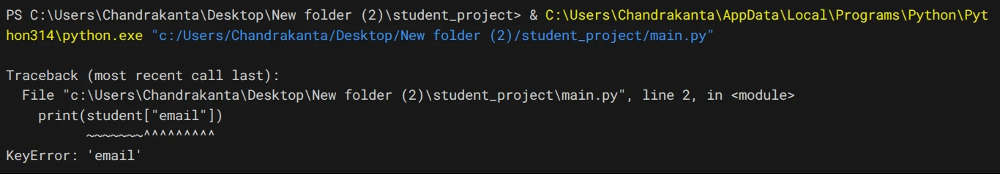
"email" key.Handling it:
student = {"name": "Rahul", "age": 21}
try:
print("Email:", student["email"])
except KeyError:
print("Email not available for", student["name"])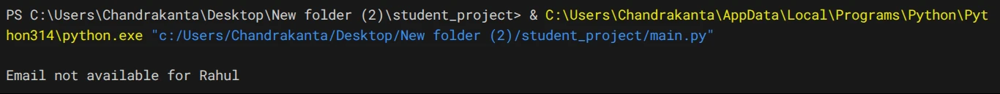
customer = {"name": "Kavya", "city": "Pune"}
try:
print("Phone:", customer["phone"])
except KeyError:
print("Phone number not available for", customer["name"])Phone number not available for KavyaKeyError is everywhere when working with JSON and API responses: not every record has every key. Handle it, or use record.get("phone", "not available") to supply a default.FileNotFoundError
You met this in File Modes: opening a missing file in "r" mode.
with open("marks.txt", "r") as file:
content = file.read()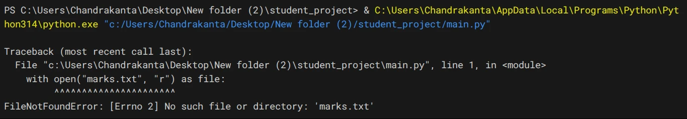
marks.txt to open.Handling it:
try:
with open("marks.txt", "r") as file:
content = file.read()
print(content)
except FileNotFoundError:
print("marks.txt not found. Please check the file name.")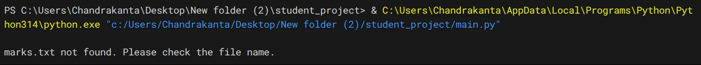
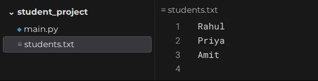
students.txt, no marks.txt.An app loading saved settings can fall back to defaults the same way:
try:
with open("settings.txt", "r") as file:
settings = file.read()
print(settings)
except FileNotFoundError:
print("settings.txt not found. Using default settings.")settings.txt not found. Using default settings.Choosing what to catch
Before writing except, ask: “What could go wrong on these lines?” The answer tells you which exception to catch.
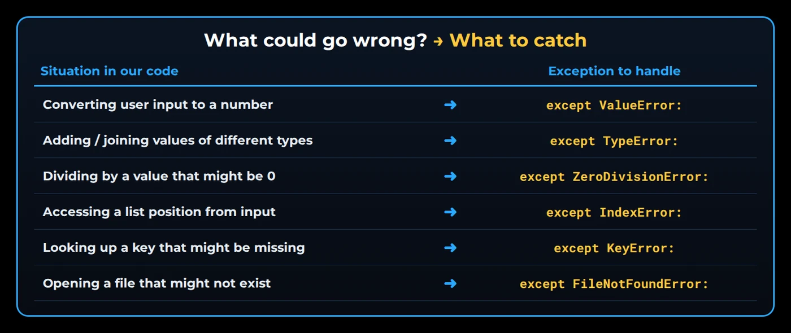
Some simple rules:
- 1Catch the specific exception you expectnever a bare
except: - 2Keep the try block smallonly the risky lines go inside
- 3Fix bugs, don’t hide themif the exception means a mistake in your code (like most TypeErrors), correct the code
Keep the try block small
try:
students = ["Rahul", "Priya", "Amit"]
position = int(input("Enter position: "))
print("Student:", students[position])
print("Total students:", len(students))
except ValueError:
print("Please enter a number.")students = ["Rahul", "Priya", "Amit"]
try:
position = int(input("Enter position: "))
except ValueError:
print("Please enter a number.")Only one line can raise a ValueError: the int(input(...)). Keeping just that line inside try makes it clear where you expect problems. (The code that uses position then belongs in an else block, coming next.)
else and finally
else: runs only when try succeeded
try:
# risky code
except ExceptionName:
# runs if an error happens
else:
# runs if NO error happensWhy not just put the success code at the end of try? Because try should hold only the risky code. Success code goes in else, so if it has a problem, that problem isn’t accidentally caught by the wrong except.
try:
marks = int(input("Enter marks: "))
except ValueError:
print("Please enter a valid number.")
else:
print("Marks saved:", marks)
print("Well done!")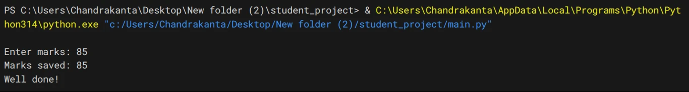
85: no error, so else runs.abc: except runs, else is skipped.try:
amount = int(input("Enter recharge amount: "))
except ValueError:
print("Please enter a valid amount.")
else:
print("Recharge successful for", amount)
print("Thank you!")Enter recharge amount: 299
Recharge successful for 299
Thank you!finally: runs always
finally runs no matter what: error or no error, handled or not.
try:
# risky code
except ExceptionName:
# runs if an error happens
finally:
# runs ALWAYStry:
marks = int(input("Enter marks: "))
print("Marks entered:", marks)
except ValueError:
print("Please enter a valid number.")
finally:
print("Thank you for using the program.")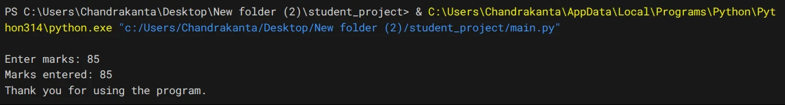
85.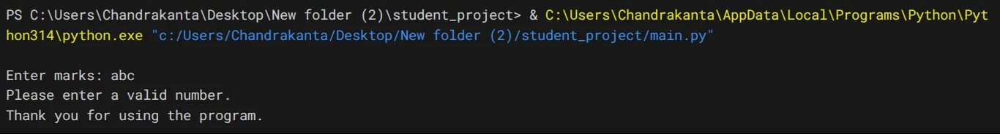
abc.Both times, the finally message was printed.
try:
amount = int(input("Enter amount: "))
print("Withdrawing", amount)
except ValueError:
print("Invalid amount entered.")
finally:
print("Please take your card.")Enter amount: abc
Invalid amount entered.
Please take your card.finally runs even when the exception is not handled. Here we divide by zero but only catch ValueError:
try:
total = int(input("Enter total marks: "))
print("Average:", total / 0)
except ValueError:
print("Please enter a valid number.")
finally:
print("finally block ran")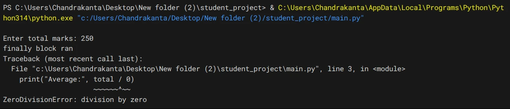
250: “finally block ran” appears above the traceback.The program still crashed with a ZeroDivisionError, but look carefully: “finally block ran” was printed before the crash.
Cleanup with finally
Because it always runs, finally is the place for cleanup, like closing a file. Suppose students.txt holds names (Rahul, Priya, Amit), but the program expects a number:
file = open("students.txt", "r")
try:
count = int(file.read())
print("Count:", count)
except ValueError:
print("The file does not contain a number.")
finally:
file.close()
print("File closed:", file.closed)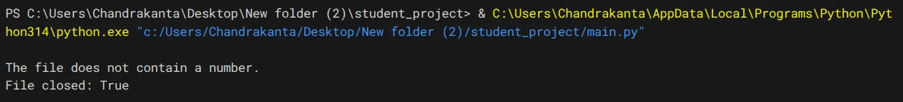
finally still closed the file.The conversion failed, but the file was still closed. A shop reading its stock count from stock.txt uses the same pattern: with 42 in the file it prints Items in stock: 42 then File closed: True; with text in it, the error message then File closed: True.
file = open("stock.txt", "r")
try:
stock = int(file.read())
print("Items in stock:", stock)
except ValueError:
print("stock.txt does not contain a valid number.")
finally:
file.close()
print("File closed:", file.closed)with does for you. with open(...) has a built-in “finally” that closes the file.
| Manual | With with |
|---|---|
file = open(...) | with open(...) as file: |
try: ... | ... |
finally: file.close() | (closed automatically) |
All four together
try:
# risky code
except ExceptionName:
# runs if an error happens
else:
# runs if NO error happens
finally:
# runs ALWAYS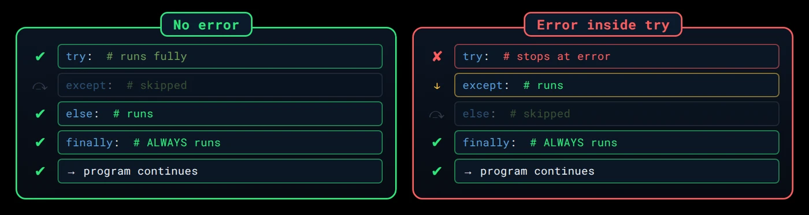
except / else runs; finally always runs.Let’s add a print to every part and watch the flow:
print("Start")
try:
print("try: converting...")
marks = int(input("Enter marks: "))
except ValueError:
print("except: invalid number")
else:
print("else: marks =", marks)
finally:
print("finally: always here")
print("End")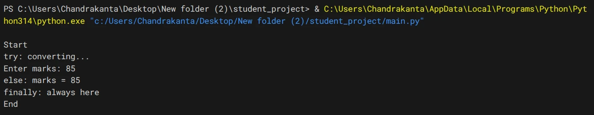
85: try → else → finally.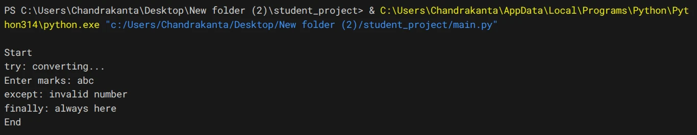
abc: try → except → finally.| Path | |
|---|---|
| no error | try → else → finally → rest of program |
| error | try (stops) → except → finally → rest of program |
print("Issuing a book")
try:
member_id = int(input("Enter member ID: "))
except ValueError:
print("Invalid member ID.")
else:
print("Book issued to member", member_id)
finally:
print("Session closed.")
print("Next customer please")Issuing a book
Enter member ID: 1042
Book issued to member 1042
Session closed.
Next customer pleaseIssuing a book
Enter member ID: A12
Invalid member ID.
Session closed.
Next customer pleaseRaising exceptions
Until now Python raised every exception. Now you’ll raise them yourself.
Why raise manually?
Some values are perfectly fine for Python, but wrong for your program. Look at this:
marks = int(input("Enter marks: "))
print("Marks saved:", marks)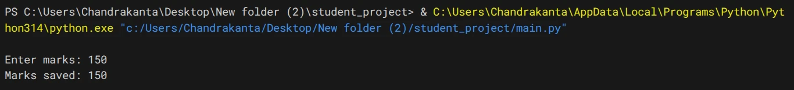
150: no error, and the wrong value is saved.Marks can’t be 150; the maximum is 100. But to Python, 150 is just a number, so there’s no error and wrong data is silently saved. Python doesn’t know the rules of your program, so when you spot a problem Python can’t see, you raise the exception yourself.
The raise statement
raise ExceptionName("message explaining the problem")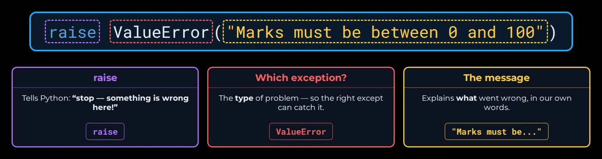
raise statement.For example:
marks = int(input("Enter marks: "))
if marks < 0 or marks > 100:
raise ValueError("Marks must be between 0 and 100")
print("Marks saved:", marks)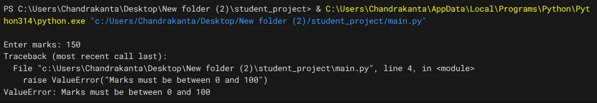
150: your own ValueError stops the program.150 is not saved. The program stops with a ValueError and your own message, exactly like a built-in exception.
Raise the right type
Just like when catching, pick the exception type that describes the problem:
ValueError
right type, unacceptable value: marks = 150, age = -5
TypeError
wrong type altogether: a number where text is expected
age = -5
if age < 0:
raise ValueError("Age cannot be negative")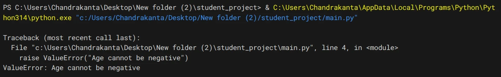
ValueError.def set_name(name):
if not isinstance(name, str):
raise TypeError("Name must be text")
print("Name set to", name)
try:
set_name(42)
except TypeError as e:
print("Error:", e)Error: Name must be textThe type matters because it decides which except block can catch it: except ValueError catches the first, except TypeError the second.
Validation: raise + try/except
The real power comes from combining them: raise when data breaks your rules, catch it to show a friendly message.
try:
marks = int(input("Enter marks: "))
if marks < 0 or marks > 100:
raise ValueError("Marks must be between 0 and 100")
print("Marks saved:", marks)
except ValueError as e:
print("Invalid input:", e)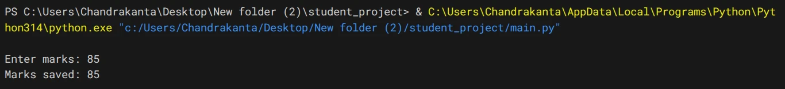
85: valid, saved.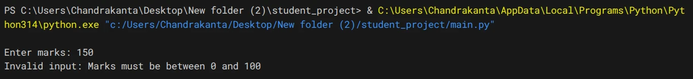
150: your rule catches it.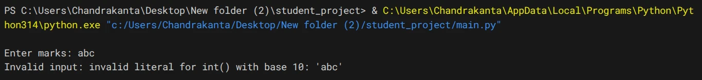
abc: Python’s own ValueError, same handler.The same except ValueError handled two different problems: 150 (raised by you) and abc (raised by Python inside int()). e carries the right message each time.
try:
tickets = int(input("Enter number of tickets: "))
if tickets < 1 or tickets > 10:
raise ValueError("You can book between 1 and 10 tickets")
print("Tickets booked:", tickets)
except ValueError as e:
print("Invalid input:", e)Enter number of tickets: 12
Invalid input: You can book between 1 and 10 ticketsValidating more than one rule
try:
name = input("Enter student name: ").strip()
if name == "":
raise ValueError("Name cannot be empty")
age = int(input("Enter age: "))
if age < 5:
raise ValueError("Age must be at least 5")
print("Student added:", name, age)
except ValueError as e:
print("Could not add student:", e)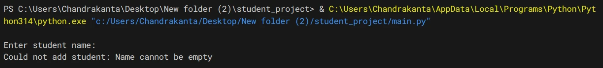
Priya and 3.Priya and 22.try:
name = input("Enter account holder name: ").strip()
if name == "":
raise ValueError("Name cannot be empty")
deposit = int(input("Enter opening deposit: "))
if deposit < 1000:
raise ValueError("Opening deposit must be at least 1000")
print("Account opened for", name, "with", deposit)
except ValueError as e:
print("Could not open account:", e)Enter account holder name: Kavya
Enter opening deposit: 500
Could not open account: Opening deposit must be at least 1000Detecting vs raising
Both end in an exception. The difference is who finds the problem.

- detecting: Python finds the problem (like
int("abc")) and raises the exception; you only decide how to respond withexcept - raising: Python sees nothing wrong (like
marks = 150); you decide it’s a problem and report it withraise
Error handling at a glance
Key terms
- Syntax error
- A mistake in how code is written (e.g. a missing bracket), found before the program runs; it must be fixed, not handled.
- Exception
- A runtime error object Python raises when something goes wrong while the program is running, such as dividing by zero.
- Traceback
- The error report Python prints for an unhandled exception, showing where (file, line), what (exception type) and why (message).
- try / except
- A structure that runs risky code in
tryand, if a matching exception occurs, runs theexceptblock instead of crashing. - Bare except
- An
except:with no exception name; it catches everything, including bugs, so it should be avoided. - else (in try)
- A block that runs only when the
tryblock finished without any exception. - finally
- A block that always runs after try/except, error or not; used for cleanup like closing files.
- raise
- A statement that raises an exception on purpose, e.g.
raise ValueError("Marks must be between 0 and 100"). - ValueError
- Raised when a value has the right type but unacceptable content, e.g.
int("twenty"). - TypeError
- Raised when an operation gets a value of the wrong type, e.g. adding a string and an int.
- ZeroDivisionError
- Raised when dividing by zero, e.g. averaging an empty list.
- IndexError / KeyError
- Raised when a list position or a dictionary key doesn’t exist.
- Graceful error handling
- Responding to a problem with a clear, useful message and continuing, instead of crashing with a traceback.
Self-check
Pick an answer. You’ll see right away whether it’s correct and why.
Which problem can not be handled with try/except?
- Dividing by zero
- A missing closing bracket
- A missing file
- A missing dictionary key
A syntax error is found before the program runs, so no code (including try) ever executes. Fix the code.
In try: print("A"); x = 1/0; print("B") with except: print("C"), what prints?
- A B C
- A B
- A C
- C
"A" runs, then 1/0 raises, so Python jumps to except, skipping "B".
Why is a bare except: risky?
- It is a syntax error
- It runs slower
- It only catches ValueError
- It also hides bugs like NameError from typos
It catches everything, so a typo looks like bad user input. Name the exception you expect.
With except ValueError and except ZeroDivisionError blocks, the user enters 250 and 0. Which runs?
- Only the ZeroDivisionError block
- Both blocks
- Only the ValueError block
- Neither; the program crashes
250 and 0 are valid numbers; dividing by 0 raises ZeroDivisionError, and only the first matching block runs.
When does the else block of a try statement run?
- Always
- Only if the try block raised no exception
- Only if an exception was caught
- Only if an exception was not caught
else is the success path; it’s skipped whenever an exception happens.
The try block raises ZeroDivisionError, but only except ValueError exists, plus a finally. What happens?
- The except block runs
- Nothing prints and the program continues
- finally runs, then the program crashes with ZeroDivisionError
- The program crashes before finally runs
finally always runs, even for an unhandled exception, which then still stops the program.
Marks must be 0–100. The user enters 150. Which line enforces the rule?
except ValueError: passint(150)finally: print("150")raise ValueError("Marks must be between 0 and 100")
Python sees nothing wrong with 150, so you must raise the exception yourself.
student = {"name": "Rahul"}. What does student["email"] raise?
KeyErrorIndexErrorValueErrorNameError
Looking up a missing dictionary key raises KeyError; IndexError is for list positions.
All of it, in one sentence
Syntax errors must be fixed, but runtime exceptions can be handled: put only the risky lines in try, catch the specific exception in except (use as e for details), put success code in else, cleanup in finally, and raise your own exceptions when data breaks your program’s rules.
— Vishwa Mohan